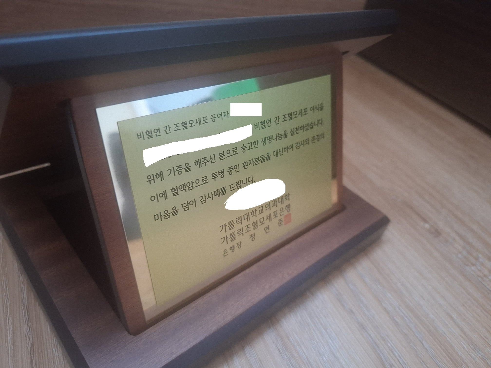
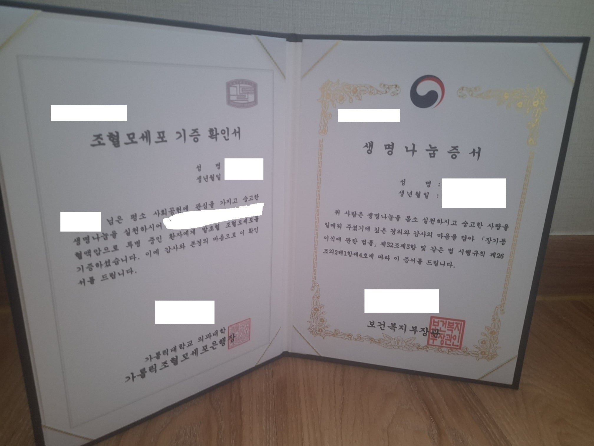

조혈모세포 기증을 했고 상패가 와서 느낀점을 써볼려고 함
모두 조혈모세포 기증이라고 하면 그렇게 어려운 것이 아니고 입원해서 헌혈하는 것처럼 하면 되는 쉬운 과정이라고 생각할 것임.
하지만 생명을 살릴 수 있는 큰 힘에는 큰 책임이 따르는 법임
먼저 생명을 위해서 행동한다는 큰 결심이 누군가에는 "굳이 너가 해야해?" 라는 말을 들을 수 있고
회사는 너가 3일이나 입원하는 것을 원하지 않을 수 있음(직장 문제로 거부하는 사람들이 많음)
또한 아무리 설명해도 가족의 반대가 있을 수 있으며 촉진제를 맞고 힘들어지는 몸상태, 팔이 아닌 나처럼 중심정맥관(목에 관 삽입)하는 것을
하게 되면 두려워질 수 있음
그래서 기증을 하지말라는 소리는 아님
오지랖이라며 인정받지 못하고 현실적인 문제에 부딪쳐도 얼굴도 이름도 모르는 누군가가 죽지않길 바란다는 마음이 확고하다면
너는 누군가를 살릴 수 있음
댓글
수집 당시 최근 댓글 10개
야니네코 · 10 시간 전
부럽다 기증신청해놨는데 10년째 연락한번안왔우
더블대시 · 9 시간 전
나도 신청하고 기한까지 몇 년 안남은 상태인데 내 기증까지 필요할만큼 아픈 사람이 많지 않아서 다행이라고 생각하려고
체크레인 · 9 시간 전
신청한지 7년째인데 아직도 연락이 없따..
감귤와이파이 · 8 시간 전
넌 한사람을 살렸다 고맙다
물질전달 · 6 시간 전
10년도 전에 했는데 연락없어서 다행
닉네임짓기제일어렵 · 5 시간 전
파이어 하게되면 헌혈계속 나가야지
배똘 · 4 시간 전
너 멋지다 뽀뽀받을래?
날마다잠자 · 3 시간 전
멋지다
Brownie · 3 시간 전
10년전에 했는데 연락이 안와...
두루도리 · 2 시간 전
너 진짜 대단한일 한거야 진짜 엄청난 일을 한거야 칭찬 100번 1000번 해주고 싶다.